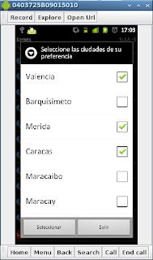
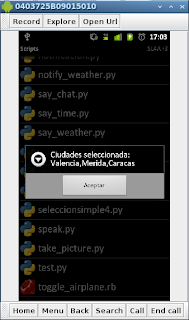

Widgets en Android con python. Parte 9 (selección multiple)
Posted on sáb 02 abril 2011 in Tutorial Python en Android • 2 min read
En este artículo explico como usar el widget de selección multiple con botones, es inicialmente el mismo código del [artículo anterior] lo que cambie es que se usa el método dialogSetMultiChoiceItems.
En este ejemplo luego de seleccionar algunas ciudades se abre una ventana de dialogo mostrando las ciudades seleccionadas.
El código se muestra a continuación:
#!/usr/bin/env python
#Se importan los módulos android y time.
import android, time
#Se crea la instancia de la clase android
droid = android.Android()
#Se crea el título de la ventana
titulo = "Seleccione las ciudades de su preferencia"
#Se crea una lista de ciudades
ciudades = ['Valencia','Barquisimeto','Merida','Caracas','Maracaibo','Maracay','Margarita']
#Se crea la ventana de alerta con el título asociado
droid.dialogCreateAlert(titulo)
#Se crea el widget de selección multiple
droid.dialogSetMultiChoiceItems(ciudades)
#Se crea el botón seleccionar
droid.dialogSetPositiveButtonText('Seleccionar')
#Se crea el botón salir
droid.dialogSetNegativeButtonText('Salir')
#Se muestra la ventana
droid.dialogShow()
#Se captura la respuesta de los botones
respuesta = droid.dialogGetResponse().result
#Se captura los items seleccioandos
items = droid.dialogGetSelectedItems()
#Si se da clip al botón seleccionar se
if respuesta['which'] == "positive":
#Se averigua si no se selecciono una ciudad y devuelve un mensaje
if len(items[1]) == 0:
droid.dialogCreateAlert("No se selecciono ciudad alguna")
elif len(items[1]) > 0:
#Si se selecciona una ciuad o más se agrega a una variable texto las ciudades separadas por coma
lista = []
texto = ""
cantidad = len(items[1])
c = 1
for i in items[1]:
lista.append(ciudades[int(i)])
if c <> cantidad:
#Si no es el último elemento se agrega al final la coma.
texto = texto + ciudades[int(i)] + ","
else:
#Si es el último elemento se agrega sin colocar la coma al final.
texto = texto + ciudades[int(i)]
c = c+1
#Se crea la ventana de dialogo con la info de las ciudades
droid.dialogCreateAlert("Ciudades seleccionada: %s" %texto)
else:
#Si se le dio clip al botón salir se muestra un mensaje y se sale de la aplicación
droid.dialogCreateAlert("Saliendo de la aplicacion")
#Se crea el botón aceptar
droid.dialogSetPositiveButtonText('Aceptar')
#Se muestra la ventana
droid.dialogShow()
La 2 siguientes imágenes muestran la ventana de selección de ciudades y luego la ventana del resultado.


El código QR del ejemplo de selección multiple se muestra en la siguiente imagen:
El código QR del ejemplo de selección simple con botones.
===
¡Haz tu donativo! Si te gustó el artículo puedes realizar un donativo con Bitcoin (BTC) usando la billetera digital de tu preferencia a la siguiente dirección: 17MtNybhdkA9GV3UNS6BTwPcuhjXoPrSzV
O Escaneando el código QR desde billetera: